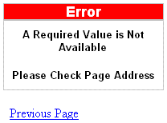

ERRORPAGE.HTM
Purpose
The AlphaSportsWeb application displays ERRORPAGE.HTM if a parameter sent to a page is missing or incorrect.
Description
ERRORPAGE.HTM is an ordinary HTML page. It contains a link that will return the user to the previous page. The page opens only if a required parameter is not passed to a page.
Links
The ASWVENDONE.A5W and INVDETAIL.A5W pages and NAV_INT navigation component call the ERRORPAGE.HTM page.

ERRORPAGE.HTM in the Browser
Page Source
ERRORPAGE.HTM is pure HTML page. An interesting part of the page is the JavaScript button that navigates the user to the last page viewed.
Page Security Information
Always Allowed
See Also